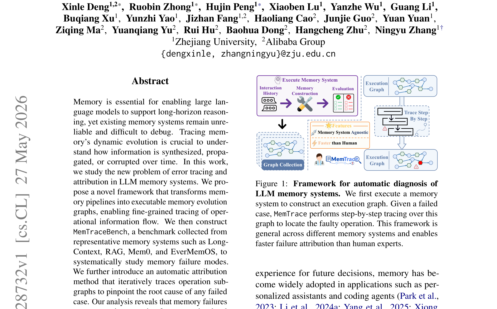
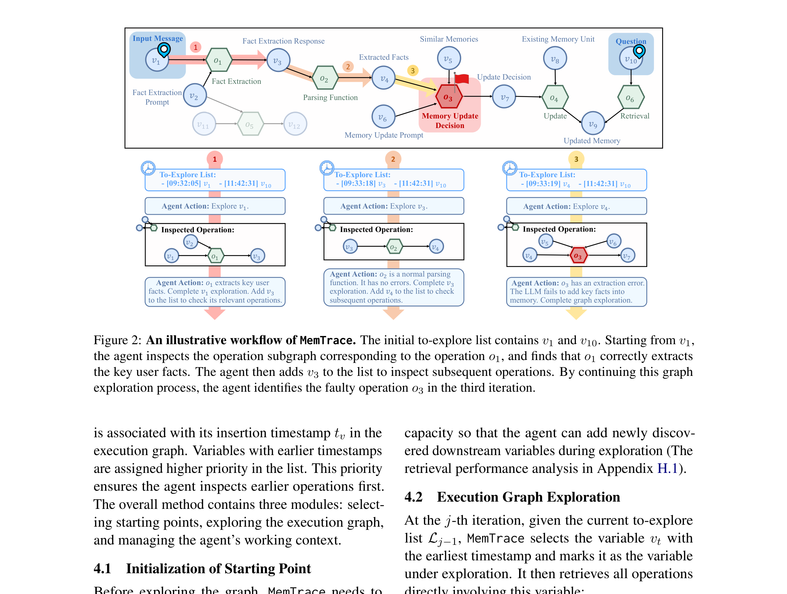
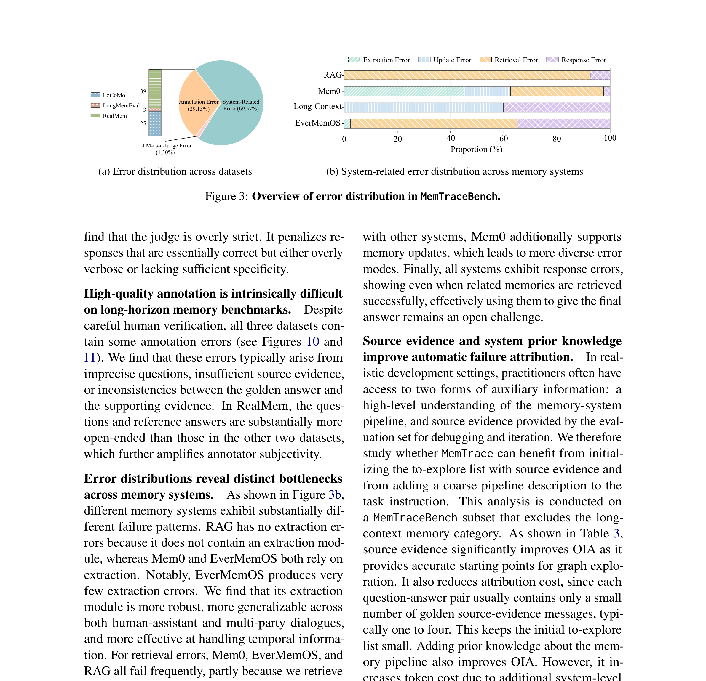
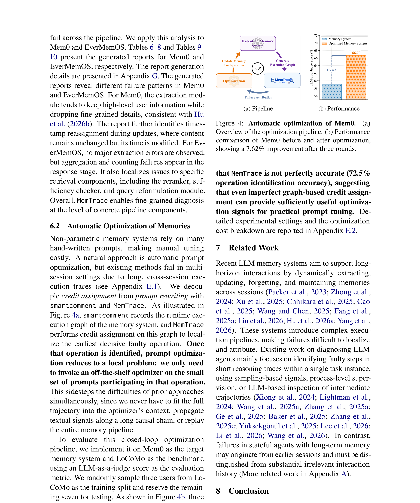

LLM 에이전트에 메모리를 붙이면 멀티턴 대화와 장기 태스크가 가능해진다. 문제는 메모리가 붙으면서 에러의 원인을 추적하기 극도로 어려워진다는 점이다. 오늘 다룰 논문 MemTrace는 바로 이 지점을 정면으로 공략한다.
“메모리 증강 에이전트가 실패했을 때, 어디서부터 잘못됐는지 어떻게 찾아낼 것인가?”
이 글에서는 Tracing and Attributing Errors in Large Language Model Memory Systems (Deng et al., 2026) 논문을 바탕으로, 왜 LLM 메모리 디버깅이 어려운지, MemTrace가 어떻게 이 문제를 푸는지, 어떤 인사이트를 얻을 수 있는지 정리해보겠습니다.
논문 한 줄 요약
MemTrace는 LLM 메모리 시스템의 실행 과정을 “메모리 진화 그래프”로 변환하고, 실패한 케이스의 원인 연산을 자동으로 추적·특정하는 프레임워크다.
단순히 “틀렸다”가 아니라,
- 어느 연산에서 정보가 손실됐는지
- 어느 시점에 잘못된 업데이트가 일어났는지
- 검색 단계에서 정렬이 어긋났는지
까지 세밀하게 추적합니다.

왜 이 논문이 중요할까?
상태 없는 에이전트 vs 메모리 있는 에이전트
기존 에이전트 디버깅 연구는 주로 상태 없는(stateless) 에이전트에 초점을 맞췄다. 이 경우 에러가 현재 실행 궤적 안에 국한되어 있다 — 잘못된 도구 호출, 검색 결과, 추론 단계 같은 것들이다.
하지만 메모리 증강 에이전트는 근본적으로 다르다.
- 사용자 선호가 처음엔 올바르게 저장되었다가, 이후 업데이트에서 잘못 덮어씌워질 수 있다
- 이 에러는 훨씬 나중에 검색이나 응답 생성 단계에서야 드러난다
- 단순한 시간순 로그만으로는 어느 연산이 원인이고 어떻게 전파됐는지 파악이 불가능하다
기존 메모리 벤치마크의 한계
LoCoMo, LongMemEval, RealMem 같은 기존 벤치마크들은 **결과 중심(outcome-oriented)**이다. 시스템이 정보를 잘 저장·검색·활용했는지는 알 수 있지만, 실패가 어떤 인과 경로를 통해 발생하고 전파됐는지는 복원하지 못한다.
MemTrace는 이 추적 가능성(traceability) 갭을 메우려는 시도다.
핵심 아이디어: 실행 그래프(Execution Graph)
MemTrace의 핵심은 메모리 시스템의 실행을 이분 방향 비순환 그래프(DAG) 로 모델링하는 것이다.
G = (V, O, E)
- V (변수 노드): 실행 중 생성되는 구체적인 산출물 — 원본 메시지, 검색된 메모리 유닛, 중간 요약, 프롬프트 등
- O (연산 노드): 계산 단계 — LLM 추론, 도구 호출, 검색, 필터링, 파싱 등
- E (방향 간선): 변수와 연산 사이의 정보 흐름
각 연산은 입력 변수를 받아 출력 변수를 생성한다. 이 그래프는 어떤 연산이 어떤 변수를 소비하고, 수정하고, 덮어쓰고, 전파하는지를 명시적으로 포착한다.
왜 시간순 로그로는 안 되는가?
시간순 로그는 평평한(flat) 시퀀스다. 메모리 시스템의 실행 추적은 수십 MB까지 자라날 수 있고, 서로 다른 연산과 시간 단계에 걸쳐 의존성이 얽혀 있다. 그래프 구조가 없으면 “이 메모리 유닛이 언제 만들어져서 어디에 쓰였는가”를 추적할 수 없다.

문제 정의: Decisive Error Set
MemTrace는 “Decisive Error Set(결정적 에러 집합)” 이라는 개념을 도입한다.
실행 그래프 G가 주어졌을 때, 찾고자 하는 것은 다음 세 조건을 만족하는 최소한의 연산 집합이다:
- 해당 연산들이 실제로 잘못 실행됨
- 그 상위(업스트림) 조상 연산들은 모두 정상 작동함
- 해당 연산의 잘못된 출력을 올바른 것으로 교체하면 전체 실행이 성공으로 복원됨
여기에 최소성(minimality) 조건이 붙는다 — 하나라도 빼면 인과적 충분성이 깨지는 가장 작은 집합이어야 한다.
이건 쉽게 말해 “이 연산 하나(또는 몇 개)만 고치면 전체가 정상 작동한다”는 최소 복구 프론티어를 찾는 것이다.
MemTraceBench: 어떻게 구성됐나?
연구진은 메모리 시스템 에러 귀인을 평가할 벤치마크가 없었기 때문에 MemTraceBench를 새로 구축했다.
데이터 소스
- LoCoMo (Maharana et al., 2024)
- LongMemEval (Wu et al., 2025)
- RealMem (Bian et al., 2026)
평가 대상 메모리 시스템 (4종)
| 시스템 | 유형 |
|---|---|
| Long-Context | 컨텍스트 윈도우 내 전체 유지 |
| RAG | 검색 기반 증강 생성 |
| Mem0 | 상용 메모리 관리 플랫폼 |
| EverMemOS | 운영체제형 메모리 관리 시스템 |
구축 과정
- 각 메모리 시스템의 소스 코드에 추적 코드(instrumentation)를 삽입
- 샘플 궤적(trajectory)에서 실행하여 1,514개의 개별 에러 수집
- 5명의 어노테이터가 에러 연산, 에러 유형, 설명을 직접 라벨링
- 최종 160개의 시스템 관련 실패 케이스로 구성
각 케이스에는 질문-정답 쌍, 전체 실행 추적, 정답 에러 라벨, 장애 연산, 인간 설명이 포함된다.

smartcomment: 가벼운 추적 패키지
기존 추적 프레임워크는 이벤트 중심이라 변수의 진화와 의존성을 직접 추적하지 못했다. 연구진은 이를 위해 smartcomment라는 경량 추적 패키지를 개발했다. 개발자가 지정한 연산, 변수, 의존성을 자동으로 기록한다.
MemTrace 자동 귀인 방법
MemTrace의 자동 에러 귀인은 두 단계로 작동한다:
1단계: 관련 소스 메시지 검색
실패한 케이스의 질문과 정답을 기반으로, 실행 그래프에서 관련 있는 소스 메시지를 검색한다.
2단계: 정보 흐름 서브그래프 역추적
검색된 메시지에서 시작해, 실행 그래프의 간선을 따라 역방향으로 연산 서브그래프를 탐색한다. 각 연산을 검사하며:
- 이 연산이 올바르게 실행됐는가?
- 입력 변수에 문제가 없는가?
- 출력 변수에 정보 손실이 있는가?
이 과정을 반복하며 장애 연산을 특정한다.
사람 전문가보다 빠르다
논문에 따르면 MemTrace는 인간 전문가보다 더 빠르게 장애 원인을 특정한다. 실행 그래프 위에서 체계적으로 추적하므로, 로그를 수동으로 뒤지는 것보다 효율적이다.
핵심 발견: 메모리 실패는 체계적이다
MemTraceBench 분석을 통해 몇 가지 중요한 패턴이 드러났다:
1. 정보 손실 (Information Loss)
메모리 저장이나 업데이트 과정에서 핵심 정보가 누락되는 경우. 요약이 과도하게 압축되거나, 중요한 속성이 빠지는 식이다.
2. 검색 정렬 오류 (Retrieval Misalignment)
저장은 됐지만, 검색 시 관련 메모리를 제대로 찾지 못하는 경우. 임베딩 공간의 불일치나 랭킹 오류가 원인이다.
3. 업데이트 충돌 (Update Overwrite)
나중에 들어온 정보가 기존에 올바르게 저장된 정보를 덮어쓰는 경우. 특히 멀티턴 대화에서 빈번하게 발생한다.
4. 전파 에러 (Propagation)
초기에는 미미했던 에러가 후속 연산을 거치며 증폭되는 경우. 이게 가장 디버깅하기 어려운 유형이다.
이 에러들은 비체계적인 랜덤 실수가 아니라 메모리 파이프라인의 특정 연산 수준에서 체계적으로 발생한다는 점이 핵심이다. 체계적이므로, 원인을 찾으면 고칠 수도 있다.

클로즈드 루프: 에러 귀인 → 자동 최적화
MemTrace의 가장 실용적인 기여는 에러 분석에 그치지 않고 자동 시스템 최적화까지 이어진다는 점이다.
핵심 아이디어는 이렇다:
- MemTrace가 실패 케이스의 장애 연산과 에러 유형을 특정
- 이 정보를 프롬프트 최적화의 신호로 사용
- 장애 연산 주변의 프롬프트를 자동 수정
- 수정된 시스템으로 재실행
결과? 최대 7.62%의 종단 태스크 성능 향상.
에러를 찾아내는 것만으로 끝나는 게 아니라, 발견한 에러로부터 시스템을 자동 개선하는 클로즈드 루프를 구축한 점이 이 논문의 가장 강력한 부분이다.
이 논문이 주는 실전 인사이트
1. 메모리 시스템 디버깅은 근본적으로 다른 문제다
일반적인 에이전트 디버깅과 메모리 디버깅은 다른 문제 영역이다. 메모리는 시간을 가로지르는 의존성을 갖기 때문에, 단순한 로그 분석으로는 원인을 추적할 수 없다. 그래프 기반 추적이 필수적이다.
2. 실행 그래프는 범용 디버깅 도구가 될 수 있다
MemTrace의 실행 그래프 표현은 메모리 시스템에만 국한되지 않는다. RAG 파이프라인, 에이전트 워크플로, 멀티스텝 추론 등 상태를 유지하는 모든 시스템에 적용 가능하다.
3. 에터리뷰션 → 자동 개선 루프가 미래다
문제를 찾는 것과 고치는 것을 연결하는 클로즈드 루프는, LLM 시스템 운영의 자동화 방향을 보여준다. 향후 프로덕션 환경에서도 이런 자가 진단·자가 개선 루프가 표준이 될 가능성이 높다.
한계
좋은 논문이지만 몇 가지 한계도 있다:
- 160개 케이스는 벤치마크로서 의미 있지만, 규모 측면에서 확장이 필요하다
- 4종 메모리 시스템만 다루고 있어, 다른 아키텍처(예: 벡터 DB 기반, 그래프 메모리)에 대한 일반성은 추가 검증이 필요하다
- 에러 귀인의 정확도가 여전히 완벽하지 않다 — 메모리 시스템 진단 자체가 어려운 문제라는 걸 논문도 인정한다
- 프롬프트 최적화로만 개선을 시도했고, 시스템 구조 자체의 변경은 다루지 않는다
- 코드가 아직 공개되지 않았다 (GitHub: zjunlp/MemTrace 예정)
마무리
MemTrace는 LLM 메모리 시스템의 **“블랙박스를 열어보는 도구”**다. 에이전트에 메모리를 붙이는 건 이제 흔한 일이 됐지만, 그 메모리가 왜 실패하는지를 체계적으로 추적하는 연구는 거의 없었다. 이 논문은 그 공백을 채우는 중요한 첫걸음이다.
특히 에러 귀인 → 자동 최적화의 클로즈드 루프는, 단순한 분석을 넘어 실제로 시스템을 개선하는 방향까지 제시한다는 점에서 가치가 크다.
에이전트 개발, RAG 파이프라인 구축, 메모리 시스템 설계에 관심이 있다면 꼭 읽어볼 만한 논문이다.
참고 링크
- 논문: arXiv 2605.28732
- HTML 버전: https://arxiv.org/html/2605.28732v1
- 코드 (예정): github.com/zjunlp/MemTrace
- HuggingFace Papers: https://huggingface.co/papers/2605.28732